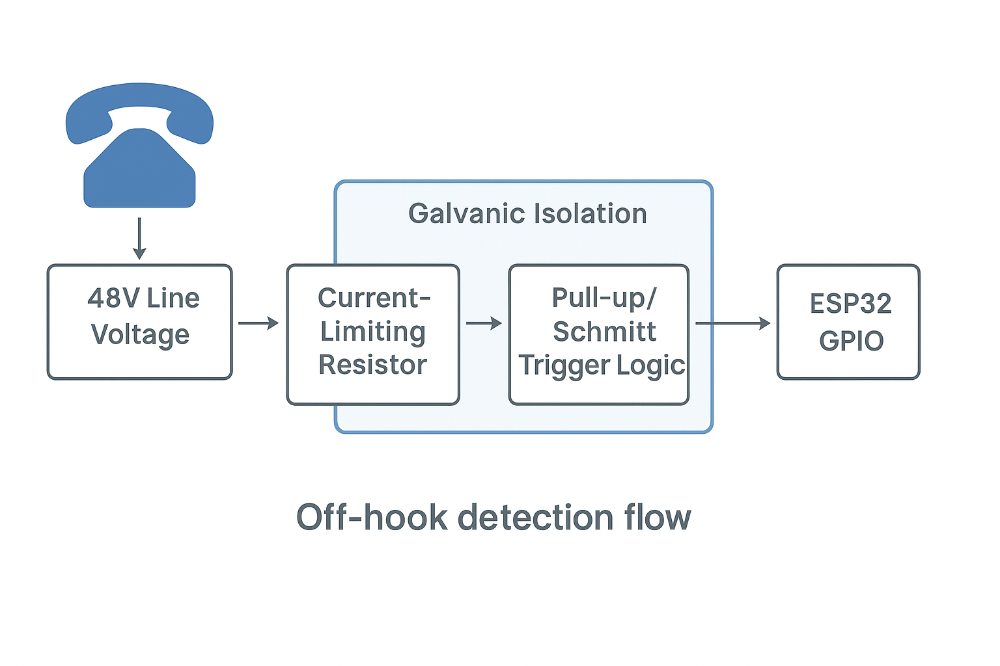

Off-Hook Detection
An off-hook detection circuit is required to sense when a telephone receiver is lifted—completing the subscriber loop between tip and ring—so that the system can recognize an attempt to place or answer a call.
Note
Safety: The subscriber loop may carry up to –48 V DC and 90 V AC ringing. All detection methods must provide robust isolation from line voltages to protect downstream circuitry and users. Never connect microcontroller logic directly to line voltage.
Functional Role
Off-hook detection plays a critical role in managing call flow. When the telephone goes off-hook (receiver lifted), a closed current path is created across the tip and ring conductors, typically resulting in 20–60 mA of DC loop current. This signals intent to place or answer a call.
When the phone returns on-hook (receiver replaced), loop current ceases, indicating call termination or cancellation.
Telephone systems use this state change to:
Initiate or answer calls
Control dial tone and ringing behavior
Manage call supervision, timeout, and billing
Trigger switching or Bluetooth pairing logic in modern integrations
Engineering Approaches Over Time
The methods used to detect the off-hook condition have evolved with changes in switching technology and safety standards. Historically, this detection occurred at the central office (CO) or within PBX systems using one of several approaches:
Mechanical Relays (Early 1900s–1940s): - Early systems used relays in series with the subscriber loop. - When the phone was lifted, loop current energized the relay coil. - Relay contacts would activate the switching path. - Reliable but bulky and prone to mechanical wear.
Discrete Transistor Circuits (1950s–1970s): - As solid-state components became common, relay logic was replaced. - Loop current flowed through a sensing resistor; the resulting voltage drop activated a transistor. - Lower cost and fewer moving parts, but lacked electrical isolation.
Optical Isolation (1970s–1990s): - Optocoupler-based designs provided safe galvanic isolation between line voltage and logic systems. - Loop current was used to drive the internal LED of an optocoupler, with the output side connected to digital logic. - Widely adopted in PBX systems, modems, and early embedded telephony.
Line Interface ICs / SLICs (1990s–Present): - Subscriber Line Interface Circuits integrate loop current sensing with additional features such as: - Battery feed - Ring injection - 2-wire to 4-wire audio conversion (hybrid) - Over-voltage protection - Off-hook detection is often integrated into these chips, especially in VoIP adapters, FXS ports, and telecom-grade line cards.
Solid-State Relays (Recent Embedded Systems): - Some embedded systems use SSRs with built-in optical isolation. - These can sense or switch based on loop current with no mechanical contacts. - Leakage current and cost may be trade-offs depending on application.
Key Considerations
Regardless of the method used, all off-hook detection circuits must meet several design requirements:
Safe voltage handling – Must tolerate and isolate –48 V DC and ringing voltages.
Reliable detection threshold – Should trigger cleanly within the expected 20–60 mA range.
Fast response – Should detect hook state changes promptly to support switching logic.
Long-term durability – Especially in CO and PBX applications, components must handle millions of cycles.
Debouncing and Supervisory Logic
Mechanical hookswitches may bounce when transitioning between on-hook and off-hook states. To ensure stable behavior:
Implement debounce filtering in software (or optionally in hardware).
Consider timeout supervision to detect calls left off-hook too long (e.g., abandoned handsets, stuck relays).
Systems may respond by playing a reorder tone, logging an error, or releasing the line.
Signal Flow Overview
The following diagram illustrates a generalized off-hook detection signal path—from the subscriber loop through the detection mechanism and into a logic or control system:
{kind=link}
Final Notes
Modern embedded systems often draw from historical practices when implementing off-hook detection, blending safety, isolation, and responsiveness. While discrete designs are still used for hobbyist and low-volume applications, commercial systems frequently rely on integrated line interface chips for robust and efficient detection.